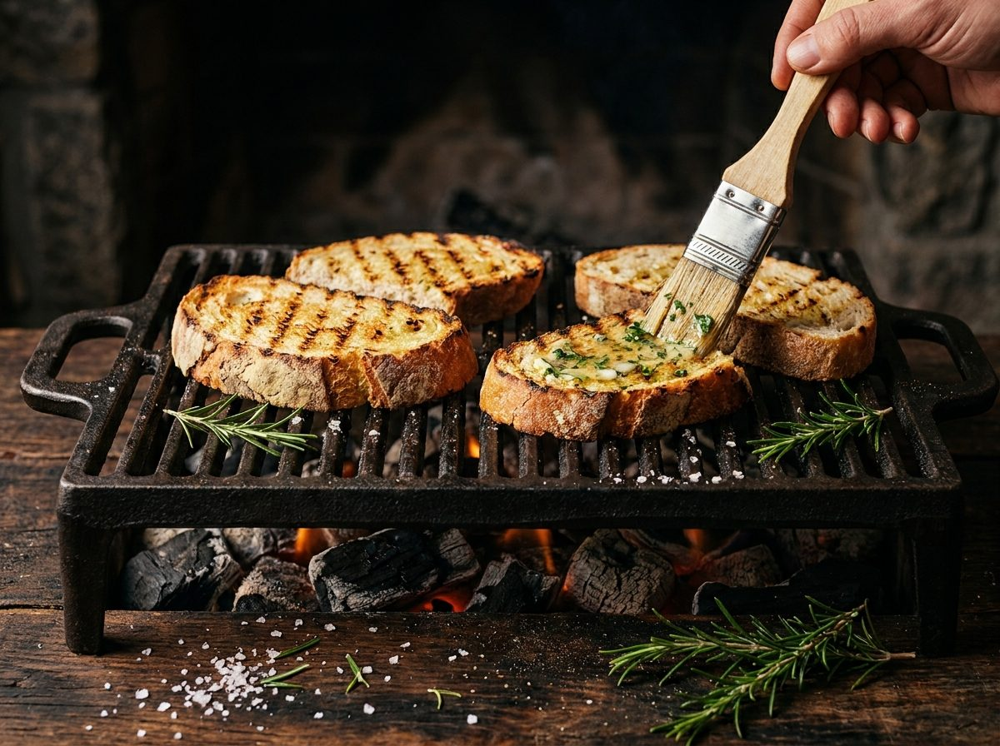

Broa e pão de alho na grelha
Ingredientes
- Fatias grossas de broa de milho e pão alentejano
- 100 g manteiga amolecida · 3 dentes de alho · salsa · flor de sal
Na brasa
- Mistura a manteiga com alho esmagado e salsa picada.
- Barra as fatias e leva à grelha em brasa média: 2–3 min de cada lado, até marcar.
- À saída, esfrega com um dente de alho cru e fecha com flor de sal.
Dica de mestre: a broa aguenta brasa melhor do que qualquer pão — a crosta densa torra sem secar por dentro.